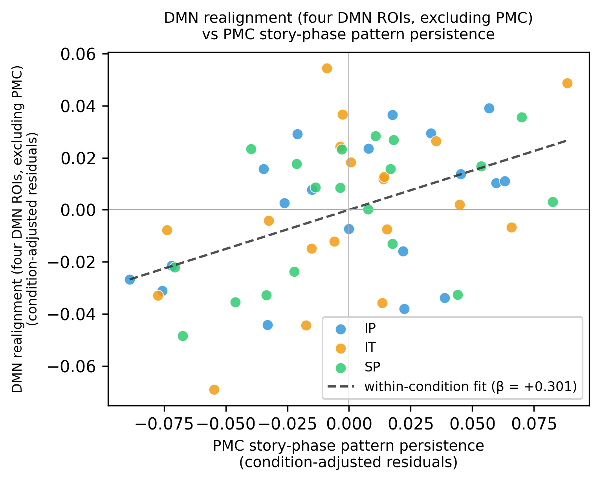
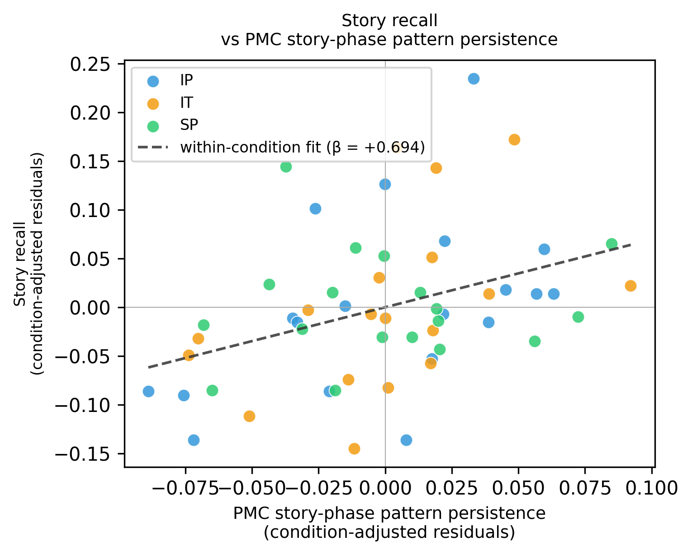

The main-text Result 4 established that the persistence of the shared posterior medial cortex (PMC) multivoxel pattern during the interruption — the interruption-phase pattern persistence, the inter-subject pattern correlation averaged over every pair of TRs in the ten TRs beginning five TRs after interruption onset — predicts both default-mode-network (DMN) realignment at story resumption and subsequent free recall, independent of hippocampal boundary activity. Here we ask whether the analogous persistence measured in the story phase immediately before each interruption — the story-phase pattern persistence, the same inter-subject pattern-correlation block computed over the ten TRs ending one TR before onset, with the onset TR excluded and no further TR discarded — carries the same predictive information, and whether it survives once the interruption-phase persistence and the hippocampal response are also entered.
For each outcome — neural resumption (DMN realignment, excluding PMC) and later narrative recall — three pooled ordinary-least-squares models were fit to the intact-pause (IP), intact-theory-of-mind (IT), and scrambled-pause (SP) participants, with condition as a categorical fixed effect, plain OLS standard errors, and one observation per participant: (1) story-phase persistence alone; (2) story-phase plus interruption-phase persistence; (3) story-phase plus interruption-phase persistence plus hippocampal boundary activity. Inputs, preprocessing, pooling, and inference are identical to Result 4. The story-phase-alone model is accompanied by a condition-adjusted scatter, placed directly below its table.
Across participants, the story-phase and interruption-phase persistence measures are correlated (r = 0.711, n = 57), which motivates entering them jointly in the models below.
DMN realignment ~ PMC story-phase persistence + condition
| Term | β | SE | t | p | 95% CI |
|---|---|---|---|---|---|
| PMC story-phase pattern persistence | 0.301 | 0.07761 | 3.878 | 2.93e-04 | [0.1453, 0.4566] |
| Condition intact_tom (vs. baseline) | 0.02374 | 0.008596 | 2.762 | 0.0079 | [0.006501, 0.04099] |
| Condition scram_pause (vs. baseline) | 0.01617 | 0.009207 | 1.756 | 0.0848 | [-0.002296, 0.03464] |
| Intercept (baseline) | 0.008867 | 0.01124 | 0.789 | 0.4336 | [-0.01367, 0.0314] |
n = 57; R2 = 0.260; adjusted R2 = 0.218; F(3, 53) = 6.21, p = 0.0011.

DMN realignment ~ PMC story-phase persistence + PMC interruption-phase persistence + condition
| Term | β | SE | t | p | 95% CI |
|---|---|---|---|---|---|
| PMC story-phase pattern persistence | 0.1023 | 0.09871 | 1.036 | 0.3051 | [-0.09583, 0.3003] |
| PMC interruption-phase pattern persistence | 0.3117 | 0.1052 | 2.965 | 0.0046 | [0.1007, 0.5228] |
| Condition intact_tom (vs. baseline) | 0.01981 | 0.008136 | 2.435 | 0.0183 | [0.003488, 0.03614] |
| Condition scram_pause (vs. baseline) | 0.01596 | 0.008598 | 1.856 | 0.0691 | [-0.001293, 0.03321] |
| Intercept (baseline) | 0.001679 | 0.01077 | 0.156 | 0.8767 | [-0.01993, 0.02329] |
n = 57; R2 = 0.367; adjusted R2 = 0.318; F(4, 52) = 7.54, p = 7.23e-05.
DMN realignment ~ PMC story-phase persistence + PMC interruption-phase persistence + hippocampal boundary activity + condition
| Term | β | SE | t | p | 95% CI |
|---|---|---|---|---|---|
| PMC story-phase pattern persistence | 0.0466 | 0.09803 | 0.475 | 0.6366 | [-0.1502, 0.2434] |
| PMC interruption-phase pattern persistence | 0.3184 | 0.1012 | 3.146 | 0.0028 | [0.1152, 0.5215] |
| Hippocampal boundary activity (post − pre onset) | 0.06553 | 0.02873 | 2.281 | 0.0267 | [0.007861, 0.1232] |
| Condition intact_tom (vs. baseline) | 0.02306 | 0.007954 | 2.899 | 0.0055 | [0.00709, 0.03902] |
| Condition scram_pause (vs. baseline) | 0.01847 | 0.008342 | 2.213 | 0.0314 | [0.001717, 0.03521] |
| Intercept (baseline) | 0.001181 | 0.01036 | 0.114 | 0.9097 | [-0.01962, 0.02198] |
n = 57; R2 = 0.426; adjusted R2 = 0.369; F(5, 51) = 7.56, p = 2.25e-05.
recall ~ PMC story-phase persistence + condition
| Term | β | SE | t | p | 95% CI |
|---|---|---|---|---|---|
| PMC story-phase pattern persistence | 0.6944 | 0.2421 | 2.868 | 0.0060 | [0.2083, 1.18] |
| Condition intact_tom (vs. baseline) | -0.02283 | 0.02667 | -0.856 | 0.3959 | [-0.07637, 0.03071] |
| Condition scram_pause (vs. baseline) | -0.06952 | 0.02859 | -2.432 | 0.0186 | [-0.1269, -0.01213] |
| Intercept (baseline) | 0.1665 | 0.03476 | 4.791 | 1.47e-05 | [0.09675, 0.2363] |
n = 55; R2 = 0.351; adjusted R2 = 0.312; F(3, 51) = 9.18, p = 5.85e-05.

recall ~ PMC story-phase persistence + PMC interruption-phase persistence + condition
| Term | β | SE | t | p | 95% CI |
|---|---|---|---|---|---|
| PMC story-phase pattern persistence | 0.3624 | 0.3479 | 1.042 | 0.3025 | [-0.3363, 1.061] |
| PMC interruption-phase pattern persistence | 0.4863 | 0.3683 | 1.321 | 0.1927 | [-0.2534, 1.226] |
| Condition intact_tom (vs. baseline) | -0.03001 | 0.02703 | -1.110 | 0.2722 | [-0.08429, 0.02428] |
| Condition scram_pause (vs. baseline) | -0.07343 | 0.02854 | -2.573 | 0.0131 | [-0.1307, -0.01612] |
| Intercept (baseline) | 0.1581 | 0.0351 | 4.503 | 4.03e-05 | [0.08756, 0.2286] |
n = 55; R2 = 0.373; adjusted R2 = 0.322; F(4, 50) = 7.42, p = 8.98e-05.
recall ~ PMC story-phase persistence + PMC interruption-phase persistence + hippocampal boundary activity + condition
| Term | β | SE | t | p | 95% CI |
|---|---|---|---|---|---|
| PMC story-phase pattern persistence | 0.2208 | 0.3486 | 0.634 | 0.5293 | [-0.4796, 0.9213] |
| PMC interruption-phase pattern persistence | 0.5008 | 0.36 | 1.391 | 0.1705 | [-0.2226, 1.224] |
| Hippocampal boundary activity (post − pre onset) | 0.1718 | 0.09373 | 1.833 | 0.0728 | [-0.0165, 0.3602] |
| Condition intact_tom (vs. baseline) | -0.02121 | 0.02684 | -0.790 | 0.4332 | [-0.07515, 0.03273] |
| Condition scram_pause (vs. baseline) | -0.06664 | 0.02813 | -2.369 | 0.0218 | [-0.1232, -0.01012] |
| Intercept (baseline) | 0.1565 | 0.03431 | 4.561 | 3.42e-05 | [0.08755, 0.2255] |
n = 55; R2 = 0.413; adjusted R2 = 0.353; F(5, 49) = 6.89, p = 6.13e-05.